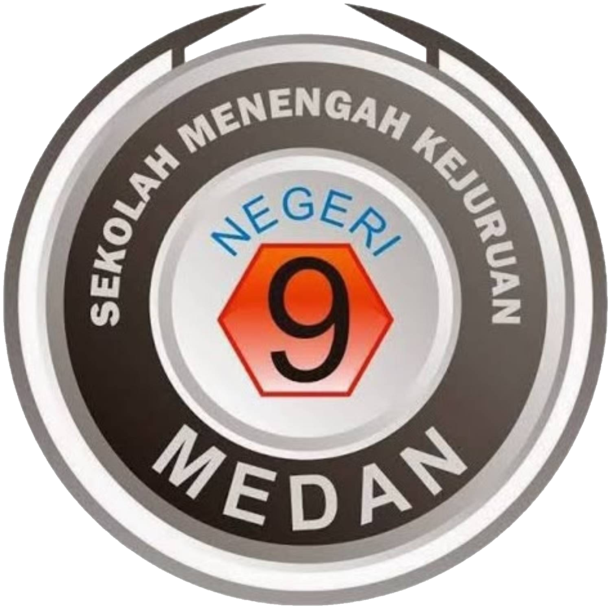
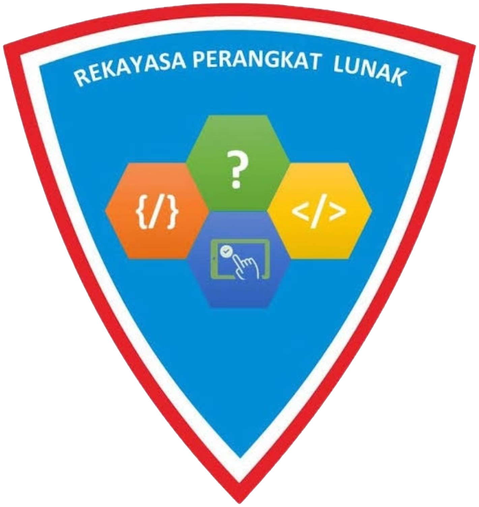
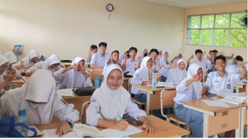
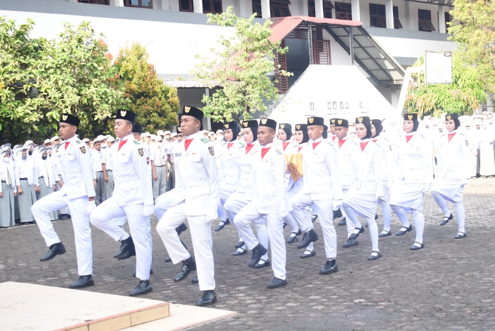
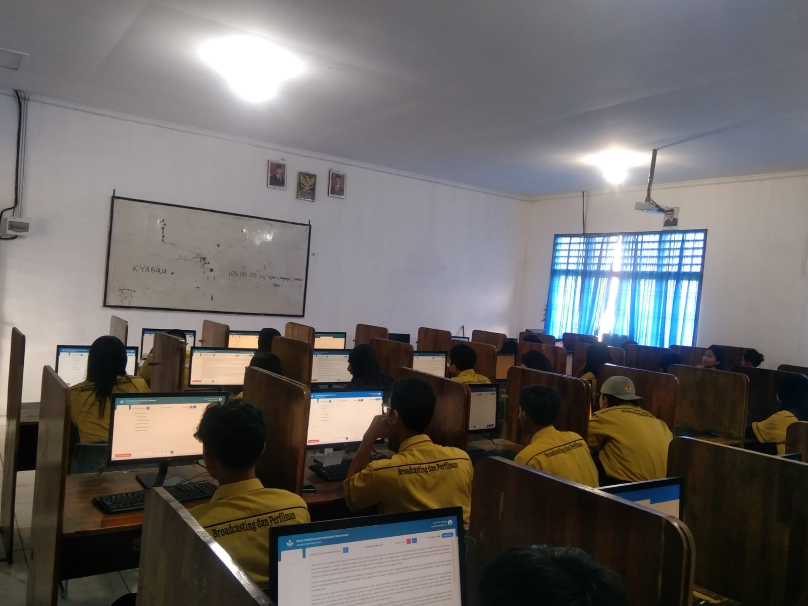
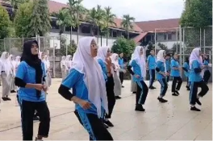

Lingkungan SMKN 9 Medan
Lingkungan SMK Negeri 9 Medan merupakan tempat belajar yang mendukung kegiatan akademik maupun nonakademik, serta membiasakan siswa menjaga kebersihan, kedisiplinan, dan kenyamanan sekolah.
LINGKUNGAN SEKOLAH

REKAYASA PERANGKAT LUNAK
Selamat datang di ruang informasi dan karya siswa RPL SMK Negeri 9 Medan.
Kenali SMKN 9 Medan ↗KENALI KAMI
Mengenal dunia pemrograman, pengembangan aplikasi, website, dan teknologi digital melalui pembelajaran teori maupun praktik.
KREATIVITAS SISWA
Lingkungan SMK Negeri 9 Medan merupakan tempat belajar yang mendukung kegiatan akademik maupun nonakademik, serta membiasakan siswa menjaga kebersihan, kedisiplinan, dan kenyamanan sekolah.
LINGKUNGAN SEKOLAH
Ruang kelas menjadi tempat berlangsungnya kegiatan belajar mengajar untuk meningkatkan pengetahuan, keterampilan, dan kreativitas siswa.
FASILITAS
Paskibra merupakan salah satu ekstrakurikuler yang melatih kedisiplinan, tanggung jawab, kepemimpinan, dan jiwa nasionalisme.
KEGIATAN SISWA
Guru berperan dalam membimbing, mendidik, dan membantu siswa mengembangkan pengetahuan serta keterampilan.
TENAGA PENDIDIK
Laboratorium komputer mendukung kegiatan praktik siswa dalam mempelajari teknologi informasi dan keterampilan digital.
FASILITAS
Senam sehat setiap hari Jumat dilakukan untuk menjaga kebugaran tubuh, meningkatkan kesehatan, dan menciptakan suasana sekolah yang lebih ceria..
AKTIVITAS SEKOLAHTETAP TERHUBUNG
Email : admin@smkn9medan.sch.id
Telp: (061) 8454350.